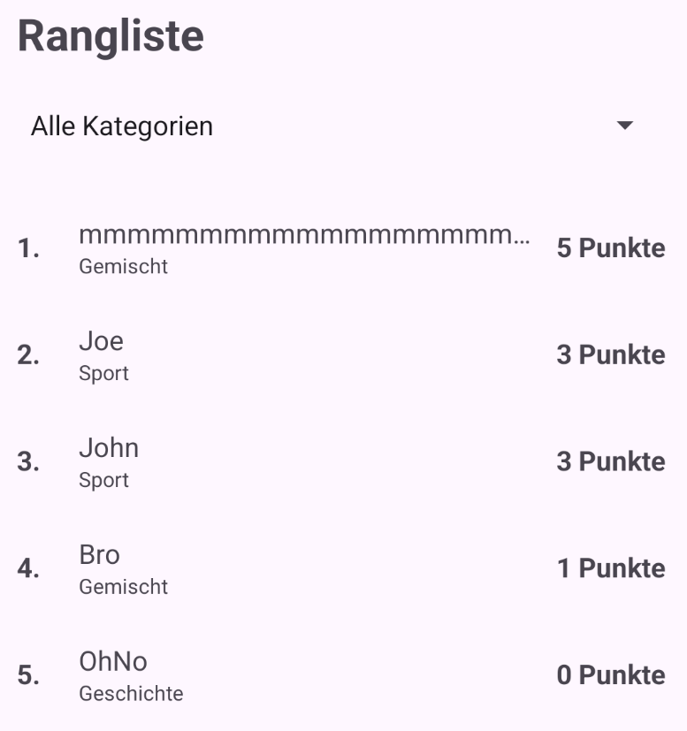

Modul 335 Mobile Applikationen, Tag 4 Vormittag. Arbeitszeit 35 Minuten. Version 6 vom 06.09.2026.
Du baust die Zeile der Rangliste um und setzt einen Filter darüber. Warum das so geht, steht in der Einführung zu 07B.

| Baustein | Wofür |
|---|---|
| tvEntryCategory | Die vierte TextView in der Zeile |
| layout_width="0dp" | Gehört zu weight dazu. Die Breite kommt aus dem Gewicht, nicht aus dem Inhalt |
| ellipsize="end" | Was nicht passt, wird durch drei Punkte ersetzt. Ohne maxLines wirkt es nicht |
A1Die Zeile umbauen. 7 Min
Öffne res/layout/item_highscore.xml. Die Zeile hat neu drei Blöcke statt drei TextViews:
+------+---------------------------+-----------+
| 1. | Sara | 4 Punkte |
| | Geographie | |
+------+---------------------------+-----------+
fest nimmt allen freien Platz so breit
36dp (0dp plus weight 1) wie nötig
Der mittlere Block ist neu. Er ist ein LinearLayout mit orientation="vertical", und er nimmt allen freien Platz. Er allein sorgt dafür, dass die Punktzahl rechts steht. Er kommt zwischen tvRank und tvEntryScore, deine bestehende tvEntryName wandert hinein:
<LinearLayout android:layout_width="0dp" android:layout_height="wrap_content" android:orientation="vertical" android:layout_weight="1"> <TextView android:id="@+id/tvEntryName" android:layout_width="match_parent" android:layout_height="wrap_content" android:ellipsize="end" android:maxLines="1" android:textSize="16sp" tools:text="Sara" /> <TextView android:id="@+id/tvEntryCategory" android:layout_width="match_parent" android:layout_height="wrap_content" android:textSize="12sp" tools:text="Geographie" /> </LinearLayout>
tvEntryName zieht um, sie kommt nicht dazu. Steht sie am Ende zweimal im Layout, ist der Editor rot.Dazu drei kleine Änderungen:
| Wo | Aus | Wird |
|---|---|---|
| tvEntryName | layout_width="wrap_content" | match_parent |
| tvEntryName | layout_marginEnd="12dp" | weg. Den Abstand hält jetzt die Punktzahl |
| tvEntryScore | kein Rand | android:layout_marginStart="12dp" |
A2Der Adapter füllt die vierte TextView. 4 Min
Zuerst zwei neue Strings in strings.xml:
<!-- Filter in der Rangliste, ab 07B --> <string name="filter_all">Alle Kategorien</string> <string name="category_mixed">Gemischt</string>
Dann HighscoreAdapter.java. Ins HighscoreViewHolder, zu den anderen drei Feldern:
final TextView tvEntryCategory;
In den Konstruktor des ViewHolder:
tvEntryCategory = itemView.findViewById(R.id.tvEntryCategory);
Und ans Ende von onBindViewHolder:
// Eine Runde über alle Kategorien ist gespeichert als "Alle". In der // Rangliste heisst sie "Gemischt". if (QuestionBank.CATEGORY_ALL.equals(entry.getCategory())) { holder.tvEntryCategory.setText(R.string.category_mixed); } else { holder.tvEntryCategory.setText(entry.getCategory()); }
So prüfst du Teil A.
Alle steht Gemischt.| Baustein | Wofür |
|---|---|
| Spinner | Die Auswahl. Kennst du aus 05C, das ist die Kategoriewahl im Spielbildschirm. Präfix spn |
| ArrayAdapter | Füllt den Spinner aus einer Liste von Texten. Auch aus 05C |
| QuestionBank.categories() | Deine Methode aus 05C. Liefert die fünf Einträge der Kategoriewahl |
| QuestionBank.byCategory(...) | Deine Vorlage für B3. Durchsucht einen Bestand und gibt eine neue Liste zurück |
| getSelectedItemPosition() | Liefert die Nummer der Auswahl, nicht ihren Text |
| OnItemSelectedListener | Neu. Meldet, dass jemand etwas ausgewählt hat |
B1Der Filter im Layout. 4 Min
Öffne res/layout/activity_highscore.xml. Zwischen Titel und RecyclerView kommt der Spinner:
<Spinner android:id="@+id/spnFilter" android:layout_width="0dp" android:layout_height="wrap_content" android:layout_marginTop="12dp" app:layout_constraintEnd_toEndOf="parent" app:layout_constraintStart_toStartOf="parent" app:layout_constraintTop_toBottomOf="@id/tvHighscoreTitle" />
Und der Handgriff, den man vergisst. Der RecyclerView hängt oben noch am Titel:
Am rvHighscore | Aus | Wird |
|---|---|---|
| Anker oben | toBottomOf="@id/tvHighscoreTitle" | toBottomOf="@id/spnFilter" |
B2Den Filter füllen. 4 Min
Der Filter hat sechs Einträge. Fünf davon stehen schon in QuestionBank.categories(), darum werden sie abgeleitet und nicht abgeschrieben. Diese Methode kommt in deine HighscoreActivity:
private List<String> buildFilterLabels() { List<String> labels = new ArrayList<>(); labels.add(getString(R.string.filter_all)); for (String category : QuestionBank.categories()) { if (QuestionBank.CATEGORY_ALL.equals(category)) { labels.add(getString(R.string.category_mixed)); } else { labels.add(category); } } return labels; }
Dazu ein neues Feld, zu adapter dazu:
private Spinner spnFilter;
Und zwei Zeilen in onCreate, direkt nach dem setAdapter am RecyclerView:
spnFilter = findViewById(R.id.spnFilter); spnFilter.setAdapter(new ArrayAdapter<>(this, android.R.layout.simple_spinner_dropdown_item, buildFilterLabels()));
Käme später eine Kategorie dazu, stünde sie sofort auch im Filter.
B3Zwei Listen und der Filter. Das schreibst du selbst. 7 Min
Erstens das neue Feld. Es ersetzt die lokale Variable in onResume:
private List<HighscoreEntry> allEntries = new ArrayList<>();
Zweitens die Konstante, zu TAG dazu:
private static final int FILTER_POSITION_ALL = 0;
Drittens der Umbau von onResume, zeilenweise zum Abhaken:
| Aus | Wird |
|---|---|
| List<HighscoreEntry> entries = HighscoreStorage.getAll(this); | allEntries = HighscoreStorage.getAll(this); |
| Collections.sort(entries, ...) | Collections.sort(allEntries, ...) |
| adapter.setEntries(entries); | applyFilter(); |
| Die Log-Zeile | bleibt, mit allEntries.size() |
List<HighscoreEntry> am Anfang der ersten Zeile fällt weg. Sonst hast du eine lokale Variable, die zufällig gleich heisst wie dein Feld, und das Feld bleibt für immer leer. Der Compiler sagt dazu nichts.Und jetzt applyFilter. Deine Vorlage ist QuestionBank.byCategory. Schau sie dir an, bevor du weitertippst. Zwei Dinge sind anders. Deine Methode gibt nichts zurück, sie gibt den Ausschnitt direkt an den Adapter. Und die gesuchte Kategorie kommt aus der Position im Spinner, die ist um eins verschoben:
| Position | Was dort steht | Welche Kategorie gemeint ist |
|---|---|---|
| 0 | Alle Kategorien | keine. Zeig einfach alles |
| 1 | Gemischt | categories().get(0) |
| 2 | Sport | categories().get(1) |
| n | categories().get(n - 1) |
Der Rahmen. Füll ihn mit eigenem Code:
private void applyFilter() { int position = spnFilter.getSelectedItemPosition(); if (position == FILTER_POSITION_ALL) { ... hier den ganzen Bestand an den Adapter geben ... ... und danach raus aus der Methode ... } String category = QuestionBank.categories().get(position - 1); ... hier eine neue, leere Liste anlegen ... ... hier über allEntries laufen ... ... und jeden Eintrag anhängen, dessen Kategorie passt ... ... hier die neue Liste an den Adapter geben ... Log.d(TAG, "filter=" + category + ", shown=" + ... ); }
B4Der Listener. 5 Min
Dem Spinner sagen, dass er sich melden soll. Das ist der neue Baustein von heute. In onCreate, direkt nach dem setAdapter am Spinner:
spnFilter.setOnItemSelectedListener(new AdapterView.OnItemSelectedListener() { @Override public void onItemSelected(AdapterView<?> parent, View view, int position, long id) { applyFilter(); } @Override public void onNothingSelected(AdapterView<?> parent) { // Kommt bei einem Spinner nicht vor. Eine Auswahl ist // immer gesetzt, notfalls die erste. } });
Zwei Methoden, und eine bleibt leer. Ein OnItemSelectedListener verlangt beide. Ein leerer Rumpf mit einem Kommentar, der sagt warum, ist die richtige Antwort darauf.
Starte und wähl Sport. Jetzt filtert die Liste. Und jetzt schau auf die Rangnummer links. Dein bester Sport-Eintrag stand vorher vielleicht auf Rang 3. Jetzt steht er auf Rang 1.
Das ist kein Fehler, und du hast es selbst so gebaut. In 06C steht in deinem onBindViewHolder die Zeile mit position + 1. Die Rangnummer kommt aus der Position in der Liste, die gerade angezeigt wird. Der Rang gehört nicht zum Eintrag, sondern zu der Liste, in der er steht.
So prüfst du das Ganze.
Gemischt, nicht Alle.Sport. Es bleiben nur die Sport-Einträge, und die Ränge zählen wieder bei 1 an.Gemischt. Nur die Runden über alle Kategorien.tag:Modul335: bei jedem Wechsel eine Zeile filter=Sport, shown=2.Punkt 5 prüft, dass gefiltert wird. Punkt 6 prüft, dass dein Bestand dabei heil geblieben ist. Wer nur Punkt 5 prüft, merkt den häufigsten Fehler dieses Auftrags nicht.
Freiwillig, daheim. Bei zwei Übungen steht ein Prompt dabei, wenn du mit einer KI arbeiten willst. Kopier ihn, führ den Dialog, und hör auf, wenn das Ziel im Prompt erreicht ist.
Drei Dateien haben sich verändert. applyFilter und buildFilterLabels brauchen je ein Javadoc, spnFilter und allEntries je eine Zeile. Im HighscoreAdapter steht zweimal das Wort drei, seit heute sind es vier TextViews. Und der Klassenkommentar der HighscoreActivity sagt seit 06C, die Klasse zeige eine Liste. Seit heute hält sie zwei.
An der LB gibt es 2 Punkte dafür, dass alle selbst erstellten Klassen und Methoden Javadoc-kompatibel dokumentiert sind.
Rolle: Du bist Reviewer für Java-Dokumentation. Ich bin Lernender. Ablauf: 1. Ich schicke dir eine Klasse mit meinen Javadoc-Kommentaren. 2. Du prüfst jeden Kommentar gegen drei Fragen: Sagt er, was die Methode tut, statt wie sie es tut? Steht dort etwas, das der Code nicht mehr hergibt? Fehlt eine Methode oder ein Feld ganz? 3. Du nennst mir pro Fund einen Satz und wartest auf meine überarbeitete Version. Regeln: Du schreibst die Kommentare nicht für mich und lieferst keinen fertigen Text zum Kopieren. Ziel: Der Auftrag ist zu Ende, wenn du an meiner Klasse nichts mehr zu beanstanden hast.
Zwei Versuche im Layout, jeder dauert zwei Minuten. Starte danach, schau hin, stell es wieder zurück.
res/layout/item_highscore.xml das android:layout_weight="1" weg und setz layout_width auf wrap_content. Die Punktzahl klebt jetzt am Namen. Schreib in einem Satz auf, warum das Wort rechts in deinem Layout trotzdem nirgends vorkommt.tvEntryName das android:maxLines="1" weg, ellipsize lässt du stehen. Schau auf die Höhe dieser Zeile. Schreib in einem Satz auf, warum ellipsize allein nichts nützt.Filter auf eine Kategorie, in der du nie gespielt hast. Du siehst eine leere Fläche ohne einen einzigen Hinweis. Schreib in einem Satz auf, was jemand denkt, der das zum ersten Mal sieht. Dieselbe Frage kommt in 07C wieder, und dort lösen wir sie.
Die Auswahl oben ist ein Dropdown. Man muss sie antippen, um zu sehen, was es überhaupt gibt. Bau sie stattdessen als Reiter, die alle nebeneinander sichtbar sind. Schätz zuerst, welche Bausteine du brauchst und ob das mehr oder weniger Aufwand ist als der Spinner. Erst danach baust du.
Rolle: Du bist Android-Entwickler mit Erfahrung. Ich bin Lernender und habe eine Kategorieauswahl als Spinner gebaut. Ablauf: 1. Ich schicke dir meine Schätzung: welche Bausteine ich für eine Auswahl als Reiter brauche und wieviel Aufwand das ist. 2. Du sagst mir, was an meiner Schätzung stimmt und was fehlt, je in einem Satz. 3. Danach baue ich es und schicke dir mein Ergebnis. Regeln: Du gibst mir keinen Code, bevor ich meine Schätzung geschickt habe. Ziel: Der Auftrag ist zu Ende, wenn die Reiter laufen und ich sagen kann, woran meine Schätzung daneben lag.
| Symptom | Wahrscheinliche Ursache | Was du machst |
|---|---|---|
Der Editor ist rot, tvEntryName gibt es zweimal | Beim Umbau in A1 ist die alte TextView stehen geblieben | Die alte löschen. Sie zieht in den mittleren Block um, sie kommt nicht dazu |
| Die Punktzahl klebt am Namen | Am mittleren Block fehlt layout_weight="1", oder er hat wrap_content statt 0dp | Beides prüfen, es braucht beide. Siehe A1 |
| Die Punktzahl steht rechts, aber ohne Abstand zum Namen | Am tvEntryScore fehlt layout_marginStart="12dp" | Ergänzen. Es ist die dritte Zeile der Tabelle in A1 und die, die am leichtesten untergeht |
R.string.category_mixed ist rot | Der String ist noch nicht in strings.xml | Beide neuen Strings stehen in A2, im ersten Codeblock. Trag sie ein, dann ist es weg |
| Eine Zeile ist höher als die anderen | maxLines="1" fehlt am Namen | Ergänzen. ellipsize allein wirkt nicht. Siehe A1 |
| Unter dem Namen steht nichts | Nach A1 kein Fehler | Nichts tun. Gefüllt wird sie in A2 |
| Unter dem Namen steht nach A2 nichts | findViewById für tvEntryCategory fehlt im ViewHolder | Beide Zeilen prüfen, Feld und findViewById. Siehe A2 |
Bei der gemischten Runde steht Alle | Das if in onBindViewHolder fehlt | Ergänzen. Siehe A2 |
| Der Filter liegt über der ersten Zeile | Der Anker oben am rvHighscore zeigt noch auf den Titel | Auf @id/spnFilter umhängen. Siehe B1 |
| Der Filter ist leer | Nach B1 kein Fehler | Nichts tun. Gefüllt wird er in B2 |
| Der Filter zeigt fünf Einträge | In buildFilterLabels fehlt das labels.add(getString(R.string.filter_all)) zuoberst | Ergänzen. Siehe B2 |
| Die Auswahl bewirkt nichts, und im Logcat steht nichts | Nach B2 und B3 richtig so. Danach: setOnItemSelectedListener fehlt | Nach B4 den Codeblock nochmals prüfen. Dieser Fehler meldet sich nirgends |
NullPointerException in applyFilter | Das Feld allEntries ist noch null | Gleich bei der Deklaration mit new ArrayList<>() belegen. Siehe B3 |
| Die Liste bleibt leer, obwohl es Einträge gibt | In onResume steht noch List<HighscoreEntry> vor allEntries | Den Typ streichen. Sonst füllst du eine lokale Variable und nicht das Feld. Siehe B3 |
IndexOutOfBoundsException beim Filtern | In applyFilter fehlt das - 1 bei categories().get(...) | Ergänzen. Position 0 steht nicht im Bestand. Siehe die Tabelle in B3 |
| Nach Sport und zurück auf Alle Kategorien bleiben nur die Sport-Einträge | Du hast allEntries selbst gefiltert statt eine zweite Liste zu bauen | applyFilter neu lesen. Achtung, beim Verlassen und Zurückkommen sieht alles wieder gut aus, weil onResume neu lädt |
Der Filter auf Gemischt zeigt nichts | Kein Fehler, wenn du nie über Alle gespielt hast | Eine Runde über Alle spielen und eintragen |
| Die Ränge zählen nach dem Filtern wieder bei 1 an | Kein Fehler | Nichts tun. Siehe B4 |
Modul 335 | Tag 4 Vormittag | Auftrag 07B | Version 6 | 06.09.2026